Version 01 · 신세계
Media Facade
그르릉, 와르르, 우르릉
Place
신세계 백화점, 조선일보, KIAF
Year
2025
Client
커스텀엑스, 미디어아트 서울
INTEGRATED PROCESS
Lightchaser는 공간 설계부터 구현까지 전 과정을 책임지며, 콘텐츠와 기술이 분리되지 않는 미디어 파사드를 만듭니다.
OUTPUT
Final Output Videos
Version 02 · KIAF
Version 03 · 조선일보
01
Site Analysis & Field Research
“공간의 조건과 맥락을 읽는 단계”
현장 공간의 구조, 빛 환경, 동선, 제약 조건 분석

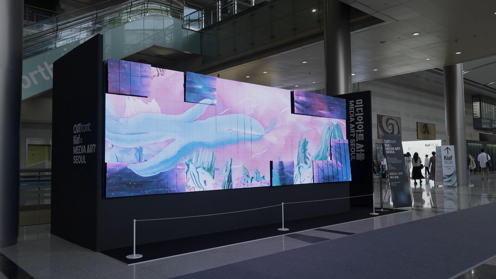
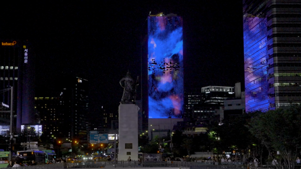
02
Spatial Design & Technical Planning
“파사드 기술 구조를 설계하는 단계”
설계 방식 : 아나몰픽 디스플레이, 다중 디스플레이, 키넥트
디스플레이
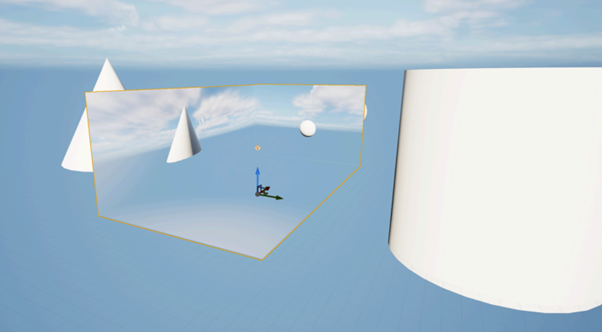
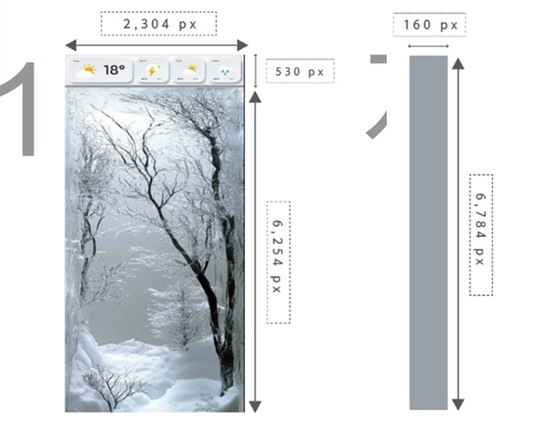

03
3D Scanning & Mapping Guide
“공간을 도식화 하는 단계”
공간 스캐닝
: 공간의 특징을 활용한 콘텐츠 설계 (벽돌, 창문, 구조 분리)
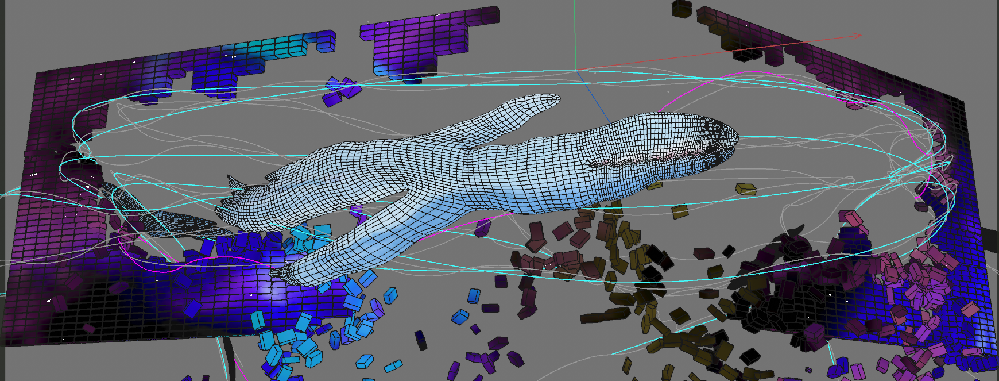
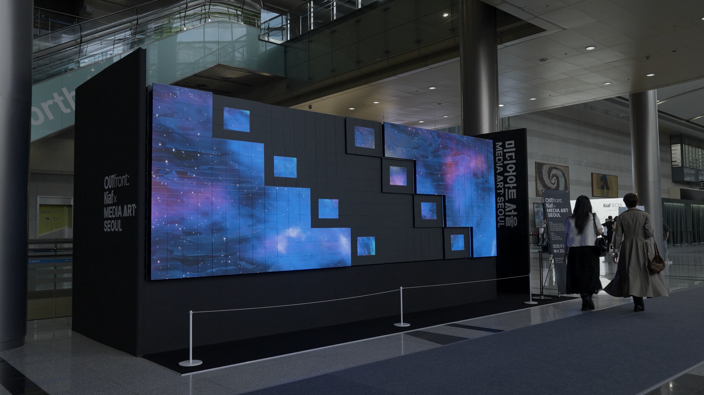
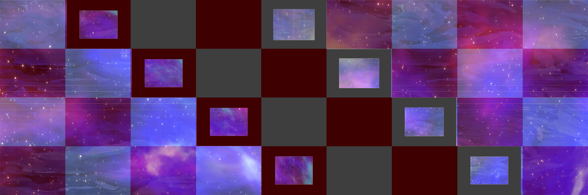
WORK OVERVIEW
《그르릉, 와르르, 우르릉》
Lightchaser는 최수인 작가의 세계관인 ‘불편한 존재들 간의 긴장’과 ‘감정의 흐름’을 아뜰리에 광화의 건축 구조 위에 미디어 파사드로 재구성한다.
고래, 바위, 나무, 구름 등의 요소는 건물의 벽돌 질감과 창문 구조에 반응하며 하나의 서사를 만든다.
이 작업은 고래의 여정을 따라, 서로 다른 존재들이 같은 공간 안에서 감정을 나누고 각자의 독립성을 유지한 채 조화를 이루는 과정을 시각화한다.
01
Concept Planning & Storyboard
“세계관을 공간 흐름으로 번역하고, 전개 구조를 설계하는 단계”
키워드 정의 · 시퀀스 설계 · 장면 전환 규칙 · 스토리보드 구성

02
Source Development
“원화 요소를 파사드 구조에 맞게 분해하고, 소스를 설계하는 단계”
콘텐츠 제작을 위한 이미지 및 그래픽 소스 제작
미디어 파사드 환경에 맞춘 요소 정리
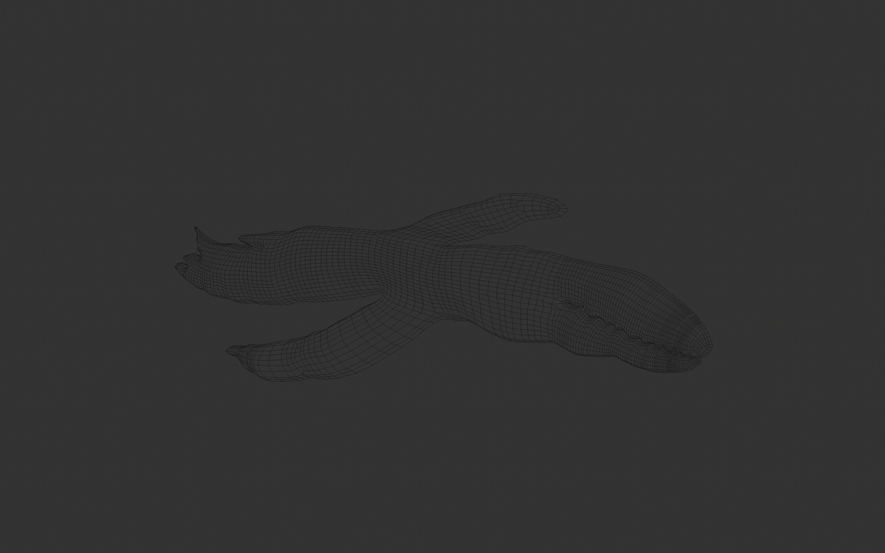
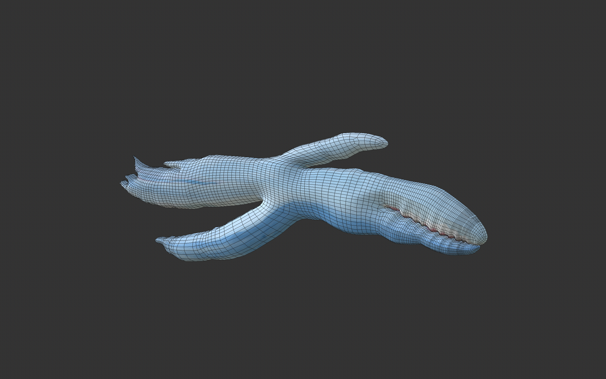
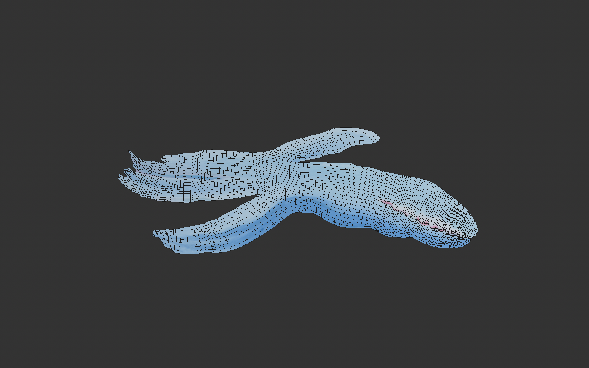
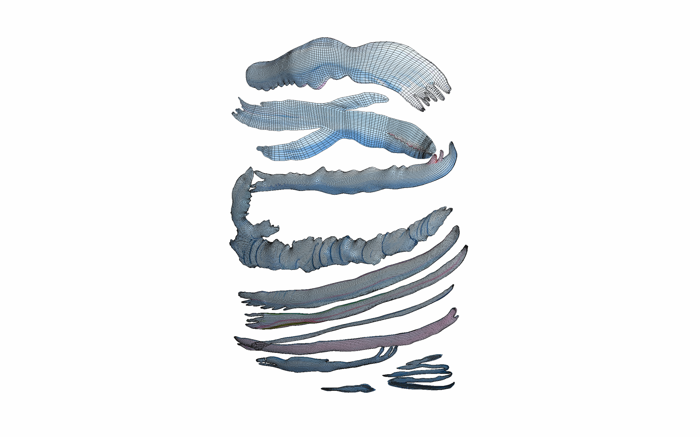
03
Motion & Sound Production
“공간 구조를 활용해 콘텐츠를 구현하는 단계”
공간의 구조와 면 분할을 고려한 모션 제작 / 사운드 기획 및
제작
모션 룰 · 속도/전환 설계 · 사운드 톤/레벨 · 합성/렌더 테스트
PT1
shinsagae
신세계 이미지 및 영상
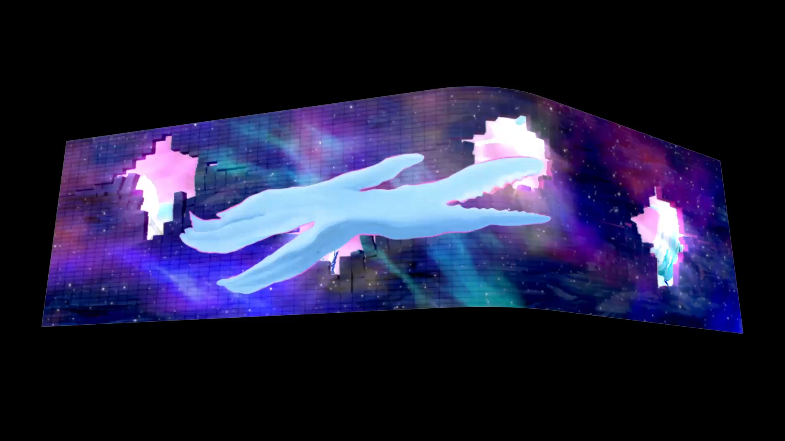
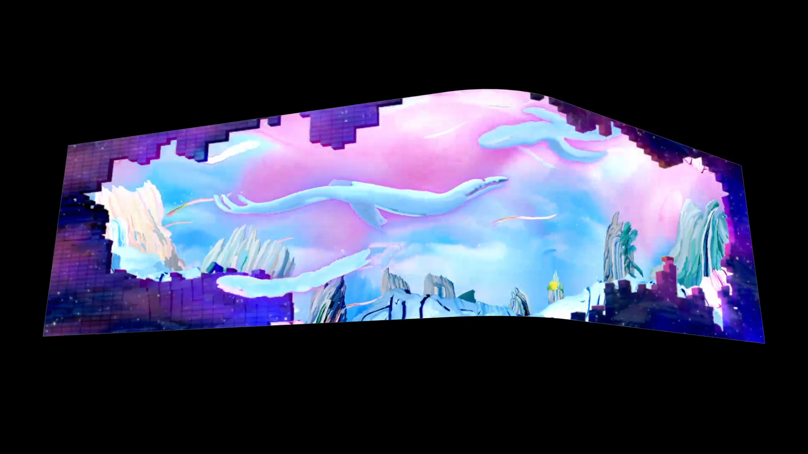
PT2
KIAF
키아프 이미지
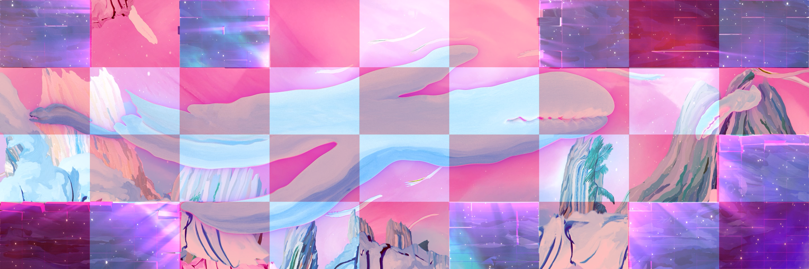

LIGHTCHASER
유환, 김문정, 이재현, 조소희, 이에셀
Collaboration
최수인 작가